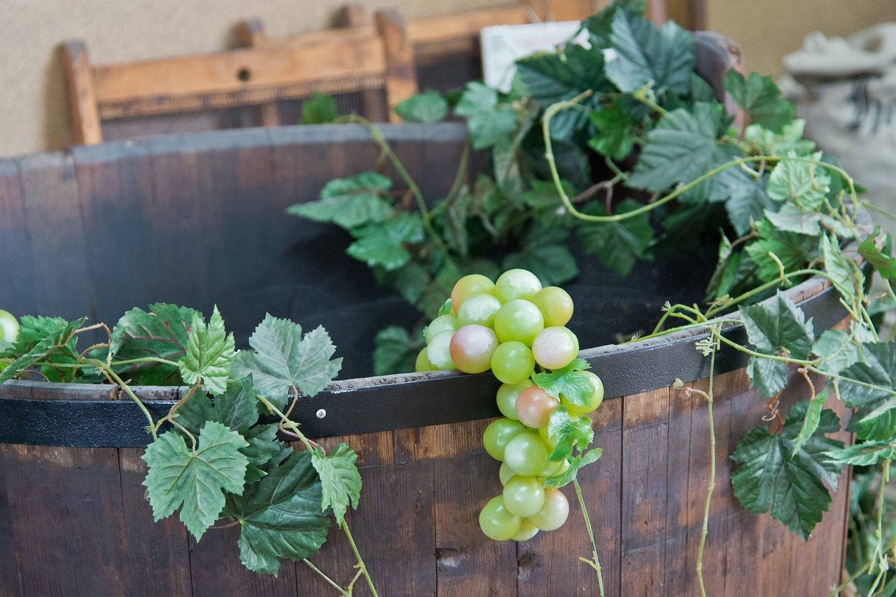

VINGÅRDEN HAVBLINK
Havblink Hvidvin - Økologisk finesse fra det sydfynske terroir.
En vingård drevet af passion, bæredygtighed og stolthed over dansk vinproduktion.
ANMELDELSER
"Simmelvar" - Havblink Hvidvin
Dansk finesse og friskhed
Stil: Tør, mineralsk, aromatisk
Beskrivelse:
Frisk, tør hvidvin med noter af lime, grønne æbler og mineralske nuancer.
Sprød syre og elegant balance giver en ren og livlig vin med sydfynsk karakter.
Ideel til skaldyr og lette retter.
BELIGGENHED, BELIGGENHED, BELIGGENHED
Midt i det sydfynske landskab, hvor solen kysser markerne og havbrisen giver karakter til jorden, finder du Havblink Hvidvin
DANSK HVIDVIN
Dansk vin vinder stadig større anerkendelse og er i dag så eftertragtet, at den serveres på flere Michelin-restauranter.
Selvom Danmark traditionelt ikke har været kendt som vinland, har ændringer i klimaet og en stigende interesse for lokal produktion skabt gode betingelser for vinavl.
Dansk vin er ikke længere bare en kuriositet – den er ved at blive en fast del af den danske mad- og vinkultur.